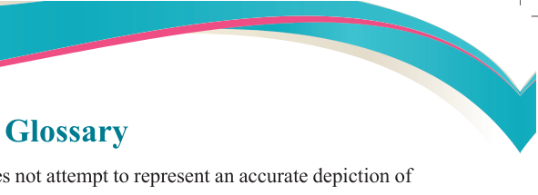
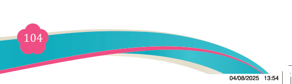

Fine Art for Secondary Schools

104

Student’s Book Form Two

Glossary
Abstract art:
is an art that does not attempt to represent an accurate depiction of

a visual reality but instead use shapes, colour, forms and gestural marks to achieve its effect.
Animate:
alive or having life
Artisans:
a worker in a skilled trade, especially a trade that involves making
things by hand.
Baren:
a hand-held tool used to apply pressure when hand-printing is done,
especially useful for small scale works.
Digital art:
any artistic work or practice that uses digital technology as part of the 5creative or presentation process or more specifically as computational art that uses and engages with digital media.
Ferrule:
the metal part of a paintbrush that connects the bristles to the handle.
It holds the bristles firmly in place and helps maintain the brush’s shape and durability.
Gel plate:
a reusable, flexible, and transparent surface used for monoprinting.
It allows for easy application and lifting of prints without a press.
Gouache:
a painting technique that uses opaque pigments mixed with water
and thickened with a glue-like binder. It produces a glue-like
substance and vibrant finish.
Inanimate:
lifeless, showing no sign of life
Ink slab:
a flat, non-absorbent surface used in printmaking for mixing,
preparing and holding ink.
Methyl acetate:
a colorless, flammable liquid with a pleasant and fruity fragrance.
It is primarily used as a solvent in various industrial and artistic applications.
Mod podge:
a versatile crafting medium that functions as a glue, sealer, and
finish. It acts as both an adhesive and a protective coating for
various surfaces.
Perspex:
a brand name for strong, transparent plastic that is sometimes used
instead of glass.
Tunnel:
a covered passageway. Specifically: a horizontal passageway
through or under an obstruction.
Vinyl:
a type of durable plastic material commonly used as a surface for printing or for making stencils in art and design.

04/08/2025 13:54